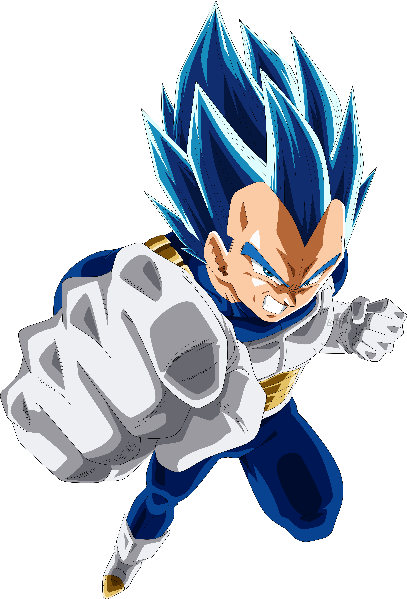

About Vegeta
Vegeta is an anime charater in Dragon-Ball z . He is also known as the Prince Vegeta , i dot personally why do he known as Prince vegeta
Vegeta is an anime charater in Dragon-Ball z . He is also known as the Prince Vegeta , i dot personally why do he known as Prince vegeta
The is a term used as Super Sayain in Dragon-Ball z for sayain when they increase their power and energy level aaand at that moment they turn themselves into Yellow shade all around their body and their hairs turns into yellow as well